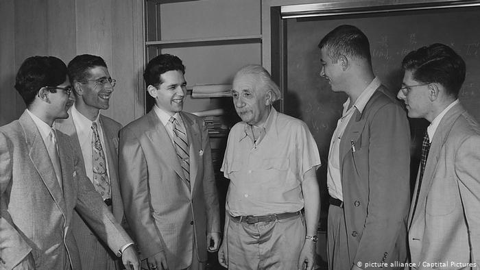
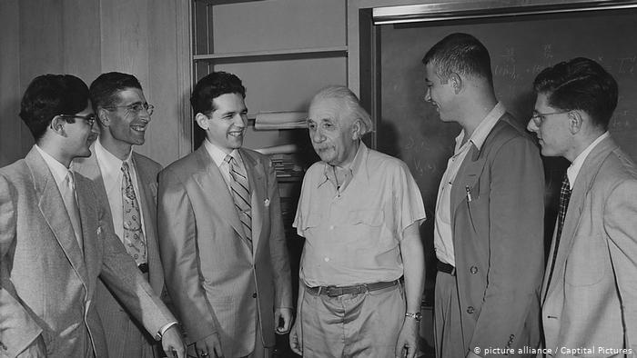

Tribute to Albert Einstein
March 14, 1879 until April 18, 1955
Fourth from left
March 14, 1879 until April 18, 1955
Fourth from left

Albert Einstein is a mathematician, physicist, and science author from German. Was born on March 14, 1879 in Ulm, Württemberg, German and died on April 18, 1955 in Princeton, New Jersey, U.S. A genius son of Hermann Einstein and Pauline Koch who was well known by the world with his relativity theories. Einstein won a Nobel Prize for Physics in 1921 for his photoelectric effect explanation.
Einstein always appeared to have a clear view of the problems of physics and the determination to solve them. He had a strategy of his own and was able to visualize the main stages on the way to his goal. He regarded his major achievements as mere stepping-stones for the next advance.
Einstein’s gifts inevitably resulted in his dwelling much in intellectual solitude and, for relaxation, music played an important part in his life. He married Mileva Maric in 1903 and they had a daughter and two sons; their marriage was dissolved in 1919 and in the same year he married his cousin, Elsa Löwenthal, who died in 1936.
You can read the full biography here.